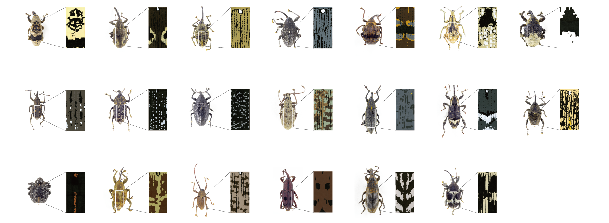

ゾウムシの柄から模様を制作し、見本帖としてまとめた。見本帖は二部構成となっており、1冊目に調査観察として行ったゾウムシの柄のスケッチを中心とし研究の土台をまとめた。2冊目には調査観察をもとに制作した模様をシルクスクリーンで印刷したものをまとめた。
調査観察においてスケッチをする際に約5mmから10mm程度のとても細かいゾウムシの柄を数十倍に拡大し行った。このミクロなものを拡大して見るという視点を応用し、模様の制作を行った。さらにゾウムシ特有のゴツゴツ感を平面的に取り出す方法を考え、ゴツゴツ感等のテクスチャをも模様製作において用いた。最終的に20種類の模様を制作し、それぞれ基本的にを3つの紙とインクの組み合わせで表現した。（里紙・灰に銀色インク、里紙・雪に白色インク、里紙・白に黒色インク）また、アクセントとして蛍光色の紙や銀色光沢紙等でも制作。制作物である本の仕様は、2冊ともに、糸がかり綴じ、サイズが横216mm、縦96mm、1冊目の『東京象虫図案原画集』が厚さ33mm、全252ページ、2冊目の『東京象虫図案見本帖』が厚さ23mm、全130ページとなっている。
ゾウムシのミクロな柄をさらに拡大した時にどう見えるのかを検証するポスターを実寸サイズのゾウムシと比べることができるよう制作。

I made a pattern from the pattern of the weevil and put it together as a sample book. The sample book is composed of two parts, and the first book summarizes the foundation of the research centering on the sketch of the pattern of the weevil that I did as a survey observation. In the second volume, I compiled the silk screen prints of the patterns created based on the survey observations.
When sketching in the survey observation, we magnified a very fine weevil pattern of about 5mm to 10mm by several tens of times. I applied the perspective of magnifying and looking at this microscopic thing to create a pattern. In addition, we devised a method of extracting the ruggedness characteristic of weevils on a plane, and used textures such as the ruggedness in pattern production. In the end, 20 different patterns were produced, each of which was basically expressed with a combination of three types of paper and ink. (Satogami/ash with silver ink, satogami/snow with white ink, satogami/white with black ink) In addition, fluorescent colored paper and silver glossy paper are also used as accents. The specifications of the two books are thread-bound, 216mm wide and 96mm long. "Tokyo Zomushi Design Sample Book" is 23mm thick and has a total of 130 pages.
Created a poster to verify how the micro pattern of the weevil looks when it is further enlarged so that it can be compared with the actual size of the weevil.